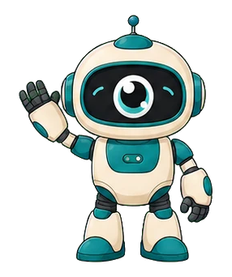
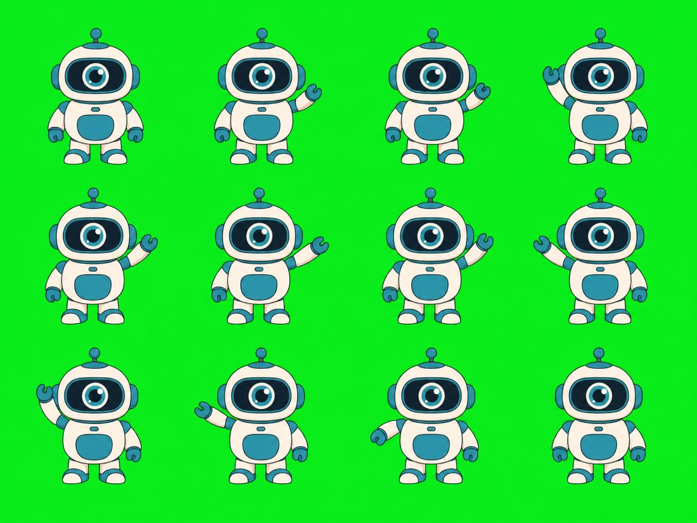

iOS
MascotSprite()
Xcode .imageset per frame at @1x/@2x/@3x, plus a SwiftUI view that
honours Reduce Motion.
Open source · MIT · Runs on your machine
Describe a character. Get a looping sprite animation and the platform bundles
to ship it — Xcode imageset with a SwiftUI view, Android WebP with the Kotlin
to play it, CSS steps(), Unity, Godot, Lottie.
The default provider is the coding agent you already have signed in. Nothing charged, nothing configured.

Or one sentence to your agent — the skill drives all of it.
One canonical still, approved once. Every animation is drawn from it, which is what keeps the mascot recognisably itself across screens.
mascotify anchor "a rounded robot,
big visor eye, teal and cream"Ten motions that survive being drawn a dozen times — the character stays planted and the camera never moves. Walking and turning drift badly; those are left out on purpose.
mascotify plan --ref ref.png --action waveKeys out the backdrop, finds the frames, normalises them onto one canvas, packs, and writes every bundle with the snippet that plays it.
mascotify ingest .mascotify/wave/sheet.pngmascotify serve # http://127.0.0.1:8765Same pipeline behind a local web app. It binds to loopback and refuses any request
whose Host or Origin is not your machine.
Image models lay out a grid by eye. Every generation gets measured, and a failure comes back as a repair prompt rather than a broken asset.
The defect that motivated all of this: asked for a 12-frame grid with baseline and scale invariants but no margin rule, the model amputated the bottom row. One numeric constraint later —
| before | after | |
|---|---|---|
| size spread | 4.6% | 0.5% |
| clipped frames | 9, 10, 11, 12 | none |
| loop seam | 1.0× | 0.14× |

A sprite sheet with no playback code is a puzzle, and every platform solves it differently enough to waste an afternoon.
MascotSprite()
Xcode .imageset per frame at @1x/@2x/@3x, plus a SwiftUI view that
honours Reduce Motion.
mascotView.playMascot()
Animated WebP in res/drawable and the Kotlin extension to start it.
<div class="wave"></div>
Animated WebP and a CSS steps() sheet with a
prefers-reduced-motion block.
Slice at 391×452
Sheet plus the slice metadata and a MonoBehaviour that plays it.
load("res://wave_frames.tres")
A SpriteFrames resource with an AtlasTexture per frame.
<lottie-player src="wave.json">
Frames embedded as base64 — raster in a Lottie container, and the docs say so.
Three cheap metrics were measured against real drift and all three failed. Silhouette IoU was worse than its own noise floor — an arm raised versus lowered moves the outline more than a changed design does. Palette and aspect ranked the same two generations in opposite orders.
So there is no verdict. mascotify compare size-matches the anchor
beside the frames and hands the judgement to someone with eyes.
The free path works because it drives your signed-in agent. On a server that route disappears and everyone needs a key — so the hosted build would be worse at the thing that makes this worth using.
It stays local. Nobody holds your secrets, and nothing is metered.
uv tool install "git+https://github.com/dige04/mascotify"
mascotify install-skill # teach your agent to drive itThen, in your agent: “make me a waving robot mascot for this app.”
Read the sourcemascotify is MIT. What you generate with it is governed by whichever model drew it — check those terms before shipping a mascot as a brand asset.